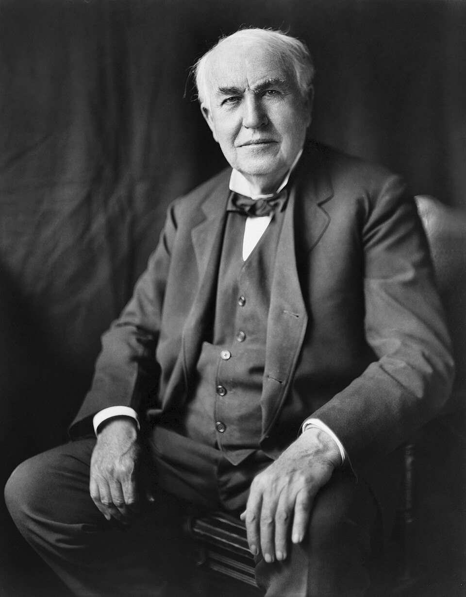

Edison muestra al público su lámpara incandescente: luz sin llama, sin humo y sin peligro
Miles de curiosos llegados en trenes especiales recorrieron esta noche el laboratorio y las calles de Menlo Park, alumbrados por decenas de globos de cristal que se encienden y apagan a voluntad. El inventor promete electricidad tan barata que sólo los ricos quemarán velas.

Esta aldea de Nueva Jersey, que hace tres años era un apeadero con media docena de casas, vivió esta noche de fin de año la romería más extraña que se recuerde: el ferrocarril de Pensilvania corrió trenes especiales para traer a los millares de curiosos —hombres de ciencia, banqueros, granjeros con sus familias— que quisieron ver con sus propios ojos la luz nueva del señor Thomas Alva Edison. Decenas de lámparas ardían sin arder en el laboratorio, en las casas y en postes a lo largo de las calles: globos de cristal con un hilo en ascua que dan una claridad suave y pareja, sin llama, sin humo, sin olor y sin viento que las apague.
El secreto costó más de un año de pruebas y es de una sencillez que desconcierta: dentro de cada globo, del que se ha extraído el aire hasta el vacío, una delgada hebra de carbón se pone incandescente al paso de la corriente, y como no hay aire que la consuma, brilla horas y horas sin gastarse. En octubre, una de estas hebras ardió cuarenta horas seguidas ante los ojos del laboratorio entero, que la veló como se vela a un enfermo. Desde entonces el mago de Menlo Park, como ya lo llaman los diarios, perfecciona lámparas, dínamos y conmutadores: porque no vende una luz, insiste, sino un sistema entero.
La luz eléctrica no nace hoy: las deslumbrantes velas de arco del señor Yablochkov alumbran desde hace dos años avenidas de París, pero su resplandor de incendio no cabe en una sala ni se deja partir en llamas pequeñas. Ese era el problema que no pocos sabios declaraban insoluble —subdividir la luz—, y en eso consiste la victoria que esta noche se exhibe: cada lámpara arde por su cuenta, se enciende y se apaga con un giro de llave, sin afectar a las demás. En Nueva York, donde los despachos de Menlo Park se leen con avidez, las acciones de las compañías de gas vienen cayendo desde hace semanas, que el dinero huele el porvenir antes que los académicos.
Entre la multitud no faltaron escenas de comedia: cuentan que más de un visitante sopló los globos como si fueran bujías y se quedó mirando la luz imperturbable, y que otros buscaban el aceite escondido; para pasmo de los que olfateaban el truco, se mostró una lámpara ardiendo dentro de un vaso de agua. Edison, de treinta y dos años, sin levita, con la ropa de trabajar arrugada, se dejaba ver entre la gente como un vecino más, respondiendo con la misma flema preguntas de granjeros y de académicos. A los periodistas les repitió la promesa que ya corre por el país: hará la electricidad tan barata que sólo los ricos quemarán velas.
Queda por delante lo más arduo, y el inventor no lo oculta: tender bajo las calles de Nueva York los conductores de un barrio entero, medir el consumo de cada casa como se mide el gas, construir dínamos como catedrales. Los hombres del gas responden que una cosa es alumbrar una aldea y otra una metrópoli, y no les falta lógica; les faltó, quizá, conocer al personaje. Quede para los años venideros decir qué se encendió esta noche en Menlo Park: si una curiosidad de feria o la lámpara con que el siglo que viene ha de leer, trabajar y desvelarse. Los que volvieron en los trenes, con los ojos llenos de luz, ya votaron.